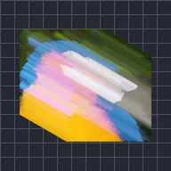

リニアストリーク

レイヤーの複製を角度に沿ってスライドさせながら重ね、重なった部分をブレンドして直線の筋を作ります。
設定
| 設定項目 | 種類 | 範囲 | デフォルト |
|---|---|---|---|
| 角度 | 角度 | -3600°〜3600° | 0° |
| 長さ | 数値 | 0〜4000 | 100 |
| アルファ | 数値 | 0%〜100% | 100% |
| バイアス | 数値 | -100%〜100% | 0% |
| ブレンド | 選択 | 明るく、平均、暗く | 明るく |

レイヤーの複製を角度に沿ってスライドさせながら重ね、重なった部分をブレンドして直線の筋を作ります。
| 設定項目 | 種類 | 範囲 | デフォルト |
|---|---|---|---|
| 角度 | 角度 | -3600°〜3600° | 0° |
| 長さ | 数値 | 0〜4000 | 100 |
| アルファ | 数値 | 0%〜100% | 100% |
| バイアス | 数値 | -100%〜100% | 0% |
| ブレンド | 選択 | 明るく、平均、暗く | 明るく |